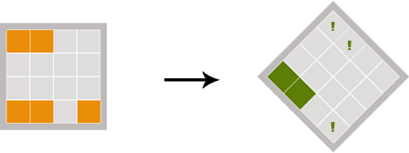

Your task is to remember the positions of all colored squares in the matrix. After they disappear, mark the positions on which the colored squares were located. Be careful: the matrix turns around after the squares disappear.  You earn points for each correct position. Once you have correctly marked all the positions in that round, you will get a bonus. After each successful round, the difficulty increases. On the contrary, after a round that is unsuccessful (i.e., one in which you place the squares incorrectly twice), the difficulty will be reduced.